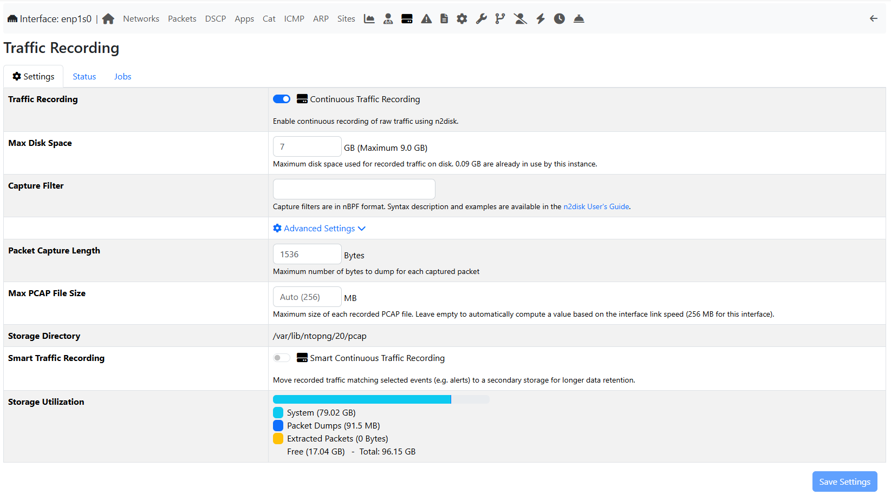
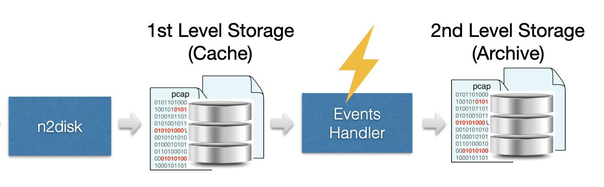
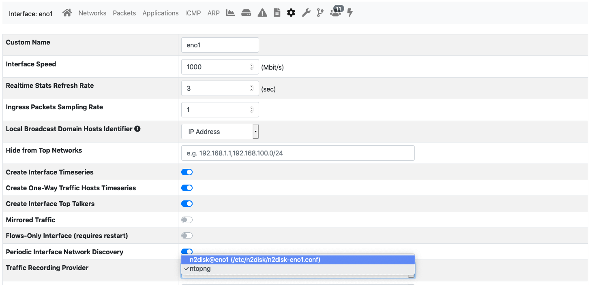
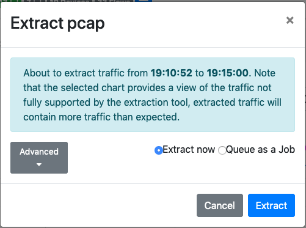
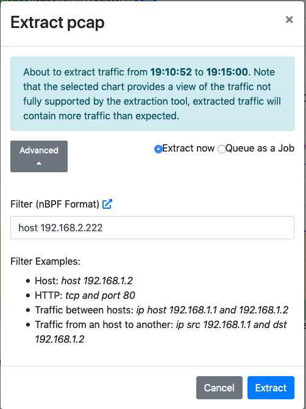
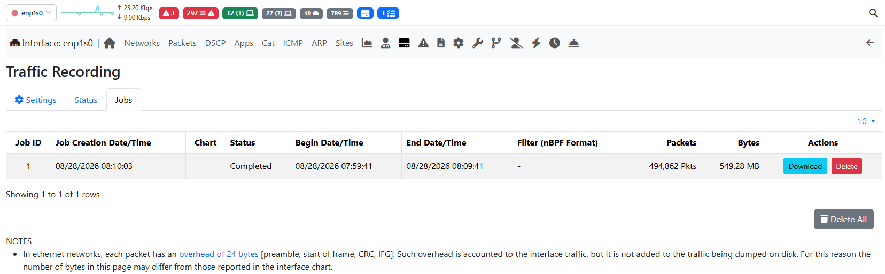

Using ntopng with n2disk
When it comes to troubleshoot a network issue or analyse a security event, going back in time and drilling down to the packet level could be crucial to find the exact network activity that caused the problem. Continuous traffic recording provides a window into network history, that allows you to retrieve and analyse all the raw traffic in that period of time.
Enabling Traffic Recording
ntopng, since version 3.7, includes support for continuous traffic recording leveraging on n2disk, an optimized traffic recording application part of the ntop suite available on Linux systems.
In order to be able to enable this feature:
both ntopng and n2disk need to be installed from packages on the same host. This is supported on physical hosts or VM. Containers are not yet supported.
n2disk should be licensed according to the required dump speed. There is an ntopng Bundle license that allows you to license both with a single, convenient license.
ntopng and n2disk should be installed and running on the same host to get a copy of the same traffic and be able to interact (access the same file system).
In order to install n2disk (we assume that you already configured the ntop repository and have ntopng installed) run the below commands according to your Linux distribution:
apt
apt-get install n2disk
yum
yum install n2disk
Please make sure that ntopng is running using the ntopng user, which is the default since version 3.7, as reported in this notice.
In order to use n2disk a license is also required, you can get one at e-shop or, if you are no-profit, research or an education institution please read this. The n2disk license can be installed directly from ntopng through the Preferences, Traffic Recording menu. The same page also provides the installed n2disk version and SystemID, both required to generate the license.
Note
ntopng Enterprise L already includes a n2disk 1 Gbit license, there is no need to buy a n2disk license if a ntopng Enterprise L license is installed.

The Traffic Recording Preferences Page
At this point you are ready to start recording traffic. Packets are dumped to disk using the industry standard Pcap file format. The default folder for pcap files is the ntopng data directory, under the “pcap” folder of a specific network inteface id (e.g. /var/lib/ntopng/0/pcap), however it is possible to replace the /var/lib/ntopng root folder with a different one adding –pcap-dir <path> to the ntopng configuration file.
Note
For Continuous Traffic Recording with ZC or FPGA adapters please read the ZC/FPGA Support section.
In order to actually start recording traffic, you need to select an interface from the Interfaces menu, open its Recording tab, choose Settings and configure the recording instance:
Toggle “Continuous Traffic Recording”
Configure the desired “Max Disk Space” value (GB, the suggested maximum is said under the field). This lets you control the maximum disk space to be used for pcap files, which also affects the data retention time (when the maximum disk space is exceeded, the oldest pcap file is overwritten). Please note that the data retention time also depends on the traffic throughput of the networks being monitored. Optionally set a “Capture Filter” (nBPF) and, under Advanced Settings, the “Packet Capture Length” and the “Max PCAP File Size” (empty: computed from the interface link speed).
Press “Save changes” in the bar that appears after a change to actually start recording (or to stop it, when the recording is turned off).
The Storage Utilization bar shows how the volume of the pcap directory is used: by the system, by the packet dumps of the interface, by the extracted packets and free. On a ZMQ collector interface the same page also lets you choose the External Interface recorded by n2disk and enable the Flow Export of its traffic to ntopng.
The Recording tab has three views: Status, Settings and Jobs (the extraction jobs, Enterprise M). Status and Jobs are available once the recording is enabled, and Status opens by default then. When n2disk is run by an external provider (see below) there are no settings: only the status and the jobs.

The Traffic Recording Page
At this point a new badge should appear on the top status bar. When the badge is blue, it means that traffic recording is running. Instead, when the badge is red, it means that there is a failure.
The Traffic Recording Badge in the Footer
It is possible to get more information about the n2disk service status by clicking on the badge, which opens the Status view of the Recording tab. It shows whether n2disk is recording (or failed: a Restart the service button restarts it), the dump window (the time range available on disk), since when it is active, the recorded traffic, the dropped packets, the smart recording window and the last lines of the n2disk log (most recent first). The refresh button in its header reads them again.

The Traffic Recording Status Page
Smart Recording
Note
Smart Recording is available with ntopng Enterprise XL only.
ntopng, since version 5.7, includes support for Smart Recording.
As described in the previous section, continuous Traffic Recording provides a window into network history, that allows you to retrieve and analyse all the raw traffic in that period of time. Data retention (the size of the window) depends on the storage size (the configured “Max Disk Space”). However at high traffic rate the available disk space may not satisfy the desired data retention, overwriting data too early, to make room for new data. In those cases it is helpful to prioritize selected traffic which is matching Network events (e.g. security alerts), which is more important then the rest of the traffic.
The Smart Recording support creates a second-level storage implementing the Smart Data Retention, which means archiving traffic matching Network events to have a longer data retention for that data (which is usually a small subset of the full raw data).

The Smart Recording Architecture
For further information please also read the Smart Recording blog post and watch the Smart Recording video tutorial.
In order to enable the Smart Recording, continuous Traffic Recording should be enabled as described in the previous page, and in the same page it is required to:
Toggle “Smart Traffic Recording”
Configure the desired “Max Smart Disk Space” to control the maximum disk space to be used for pcap files in the second level storage (events traffic only).
Press “Save changes” to actually enable it.

The Smart Recording Settings
Once Smart Recording has been enabled, when traffic extraction is requested (from one of the charts by selecting a time interval, or when downloading the pcap traffic for an alert or for a flow), traffic is extracted from the first-level storage if it falls inside the first-level storage window, or from the second-level storage otherwise (only traffic matching network events will be available in the latter case).
External Traffic Recording Providers
Recording traffic at high rates (10/40/100 Gbit and above) usually requires ad-hoc/manual configurations, as in that case accelerated capture technologies like PF_RING ZC with Intel, Mellanox or FPGA adapters are required, and n2disk needs to be properly configured and tuned to take fully advantage of the hardware architecture (CPU affinity, storage, etc).
In order to support custom n2disk configurations, ntopng can also attach to external n2disk instances/services which have been configured manually using systemd, as opposite to using ntopng for automatically configure and start the recording using the GUI. In fact, ntopng can bind to an external traffic recording provider by selecting it from the interface settings page. A dropdown menu with the list of available recording providers is shown there.

The Selection of External Traffic Recording Providers
Note
In case n2disk processes are managed manually using configuration files, ntopng will not show a settings tab nor it will allow any configuration change. However, extractions will still be possible as described in the following section.
Please also note that ZC and FPGA adapters are based on kernel bypass technologies, which provides the best capture acceleration, with the drawback that they do not (usually) allow multiple applications to capture the same data stream at the same time (with some exceptions like Silicom/Fiberblaze adapters and Mellanox, depending on the configuration). This means that ntopng and n2disk cannot capture and process the same traffic at the same time. For this reason, in order to overcome this limitation, n2disk is able to export flow metadata to ntopng over ZMQ, similar to what nProbe does (as explained in the Using ntopng with nProbe section). In this configuration n2disk can be configured to capture raw packets, dump PCAP data to disk, and export flow metadata in JSON or TLV format through ZMQ to ntopng for visibility.
In order to process flow metadata through ZMQ in ntopng, the collector interface needs to be added in the ntopng configuration file (/etc/ntopng/ntopng.conf):
-i=tcp://*:5556c
The same endpoint needs to be added to the n2disk configuration file (e.g. /etc/n2disk/n2disk-eth0.conf):
[...]
--zmq=tcp://127.0.0.1:5556
--zmq-probe-mode
--zmq-export-flows
-u=ntopng
Please note that it is a good practice to run n2disk using the ntopng user (see -u) in order to make sure that ntopng is able to access the PCAP data recorded by n2disk and run traffic extractions.
Please check the n2disk User’s Guide for a full example of n2disk configuration and further information about other options.
Traffic Extraction
All pcap files dumped to disk are indexed on-the-fly by n2disk to improve traffic extraction speed when recorded data need to be retrieved. It is possible to extract traffic from multiple places in ntopng, including the interface and the host Historical Traffic Statistics pages.
After enabling continuous traffic recording on an interface, a new button for extracting traffic appears at the top right corner of the Historical Traffic Statistics page.

The Extract Pcap Button in the Interface Historical Traffic Statistics page
By clicking on the button, a dialog box will let you run an extraction to retrieve the traffic matching the time interval selected on the chart. It is possible to download the extracted traffic directly (this should be used when the expected amount of extracted traffic is low) or queue the extraction job to process traffic in background (this should be used for extractions taking too long, or to archive extracted data on the machine running ntopng).

The Extract Pcap Dialog
In addition to the time constraint, it is possible to configure a BPF-like filter, to further reduce the extracted amount of data, by clicking on the Advanced. button The filter format is described at Packet Filtering.

The Extract Pcap Dialog Filter
When an extraction job is scheduled for background processing by selecting the Queue as Job option, ntopng extracts the traffic and creates new pcap files with the traffic. This usually requires a few seconds, depending on a few factors, including: the time interval, the amount of recorded data, the extraction filter.
A reference for the extraction job (a link to the Jobs view of the interface Recording tab, with the list of scheduled extractions, and the extraction ID) is provided after starting the extraction, in order to control the status and download the pcap file(s) as soon as the extraction is completed. The list, newest first and refreshed every 10 seconds (auto refresh switch), shows for each job its ID, creation time, status (failed jobs also say why), the extracted time range, the filter and the extracted packets and bytes. The action button of each row downloads the pcap file (a job split in several files opens a dialog with one link each); its menu opens the chart the job was scheduled from, stops a running job (in case of extractions taking too long) or deletes it (this also deletes the corresponding pcap files). Unavailable actions stay in the menu, disabled with the reason. Delete All Jobs, below the list, deletes every job of the interface (the running ones are stopped). On a view interface the Recording tab shows only the jobs, extracted from its viewed interfaces that record traffic.

The Traffic Extraction Jobs page
It is possible to access the Traffic Extraction Jobs page also by clicking on the badge that appears on the top status bar when there is at least one extraction job scheduled.
The Traffic Extraction Jobs Badge in the Top Status Bar
REST API
The pcap file can also be downloaded directly through http, running a live extraction.
It is possible to use a command line tool such as wget or curl for this.
The direct URL for downloading the pcap is
http://<ntopng IP>:3000/lua/rest/get/pcap/live_extraction.lua?ifid=<id>&epoch_begin=<epoch>&epoch_end=<epoch>[&bpf_filter=<filter>]
Where:
ifid is the interface Id as reported by ntopng in the interface page
epoch_begin is the start of the time interval to be extracted (epoch)>
epoch_end is the end of the time interval to be extracted (epoch)>
bpf_filter is a filter in nBPF format
Please note that you should use cookies for authentication, as explained in the documentation.
For example with curl you can specify username and password with --cookie "user=<user>; password=<password>"
Command line tools are useful for example to process a pcap stream and pipe it to an analysis tool such as tcpdump or tshark/wireshark. For example, to process the extracted traffic directly with wireshark, it is possible to use curl as in the example below:
curl -s --cookie "user=admin; password=admin" "http://192.168.1.1:3000/lua/rest/get/pcap/live_extraction.lua?ifid=1&epoch_begin=1542183525&epoch_end=1542184200" | wireshark -k -i -
ZC/FPGA Support
If you need to process traffic at high rate at 10/40Gbit and above, you are probably looking for capture technologies like PF_RING ZC for Intel or FPGA adapters.
As both PF_RING ZC and FPGA adapters are based on kernel bypass, the drawback is that they do not allow you to capture the same stream from multiple applications at the same time. This means that you cannot run ntopng for traffic analysis and n2disk for raw traffic recording at the same time on the same interface.
In order to overcome this, n2disk is able to export flow metadata to ntopng over ZMQ, similar to what nProbe does as explained in the Using ntopng with nProbe section. As depicted below, in this configuration n2disk can be configured to capture raw packets, dump PCAP data to disk, and export flow metadata in JSON format through ZMQ to ntopng at the same time.

Support for n2disk ZMQ export
Following is a sample configuration of n2disk and ntopng to achieve what has been depicted above. This example assumes that both n2disk and ntopng are running on the same host.
ntopng Configuration File
In order to process flow metadata through ZMQ in ntopng, you need to add a collector interface to the configuration file (/etc/ntopng/ntopng.conf):
-i=tcp://*:5556c
n2disk Configuration File
The ntopng endpoint should be added to the n2disk configuration file (e.g. /etc/n2disk/n2disk-nt01.conf)
using the --zmq option.
The --zmq-probe-mode option (if ntopng is running as a collector like in this example: notice
the small c in the ntopng endpoint) and the --zmq-export-flows option (to export flow
metadata in addition to traffic statistics) are also required.
It is a good practice to run n2disk using the ntopng user (see -u) in order to make sure that
ntopng is able to access the PCAP data recorded by n2disk and run traffic extractions.
Please see the n2disk User’s Guide for further information about the other options. Please note that in the example below n2disk is aggregating traffic in hardware from 2 ports of a Napatech adapter, please see the Napatech configuration for configuring the adapter.
--interface=nt:0,1
--dump-directory=/storage/n2disk/pcap
--timeline-dir=/storage/n2disk/timeline
--disk-limit=80%
--max-file-len=1000
--buffer-len=4000
--max-file-duration=60
--index
--snaplen=1536
--writer-cpu-affinity=0
--reader-cpu-affinity=1
--compressor-cpu-affinity=2,3
--index-on-compressor-threads
-u=ntopng
--zmq=tcp://127.0.0.1:5556
--zmq-probe-mode
--zmq-export-flows
At this point you should start both the ntopng service (e.g. systemctl start ntopng) and the n2disk service (e.g. systemctl start n2disk@nt01), and configure the n2disk instance as external PCAP source for the collector interface as explained in the External Traffic Recording Providers section in order to be able to check the n2disk service status and run traffic extractions.